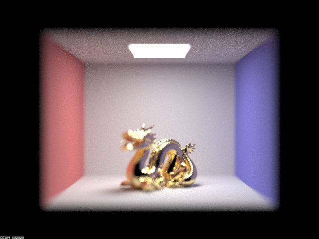
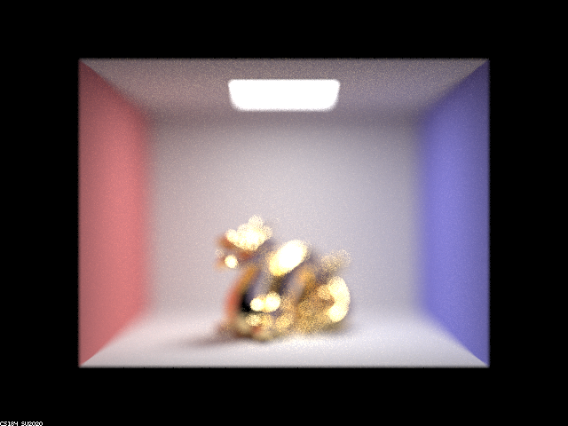
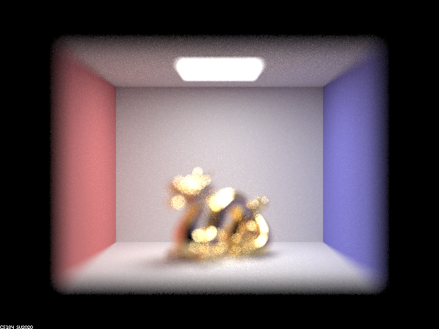
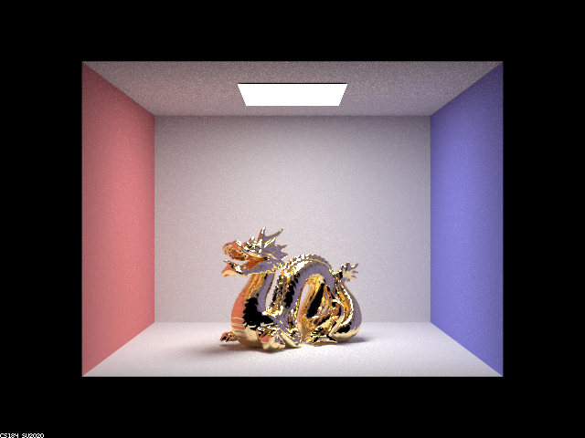
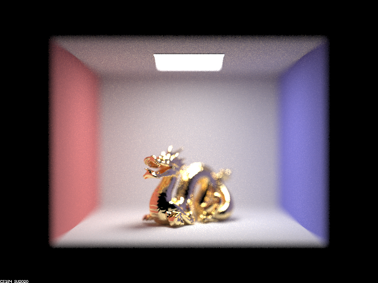
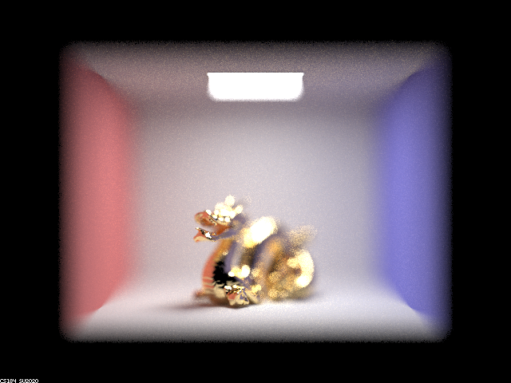
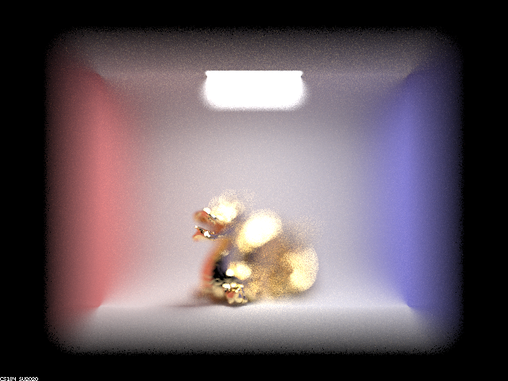

Overview
In this project we implemented the parts of mirror and glass materials to properly show their reflective/refractive behavior and depth of field to properly represent thin lens behavior and have focal distances in our camera view rather than the pinhole model of everything being in focus.
Part 1. Mirror and Glass Materials
To implement reflection, we simply transform the wo vector by reflecting it across (0, 0, 1), our normal vector. We directly use this for mirror materials since they just reflect.
To implement refraction, we use Snell's Law. Given the index of refraction and whether we are entering or exiting the material, we can use Snell's Law to determine the refracted direction (or determine if there is total internal reflection).
To implement glass materials, we combine these two. First, if there is total internal reflection we simply use the reflection case. However, otherwise there is both reflection and refraction since it is glass, so we model this by using Schlick's approximation to coinflip whether we return the reflection or refraction given a ray.
An important thing to note is that all of these results were divided by the cosine of the angle to account for later multiplying by this cosine as we do not have Lambertian falloff.
Show a sequence of six images of scene `CBspheres.dae` rendered with `max_ray_depth` set to 0, 1, 2, 3, 4, 5, and 100. The other settings should be at least 64 samples per pixel and 4 samples per light. Make sure to include all screenshots.

|

|

|

|

|

|

|
Point out the new multibounce effects that appear in each image.
At depth 0, we only see the area light.
At depth 1, we see the walls as well as the spheres, though the ceiling is still dark. The spheres are still generally black, though we can see light in a small area along the top of the spheres.
At depth 2, the ceiling is lit now. The left sphere has visible reflections off of it (though the ceiling and other sphere in the reflection are dark), and the right sphere has very faint reflections but is still mostly black. The shadows of the spheres are also a little lighter.
At depth 3, the ceiling in the reflection of the left sphere is lit. The bottom part of the sphere is also brighter than before. The biggest change is the right sphere is no longer black - it is cleared up and we can see the refraction of the scene in it, as well as a bright spot below it. The shadows under the spheres get a little lighter as well.
At depth 4, the reflection in the left sphere of the right sphere is cleared up and is no longer black. The bottom part of the sphere is also brighter than before. On the right sphere, the bottom is more illuminated and "bleeds" into the sphere. This right sphere is a little brighter overall. We can also see a lit spot on the wall to the right of that sphere. The shadows under the spheres get a little lighter as well.
At depth 5, the reflection in the left sphere of the right sphere is a little brighter. The bottom part of this sphere and the shadows of both spheres continue to get a little lighter. The right sphere is also brighter overall.
At depth 100, the scene is in general much brighter. In the left sphere, we can see the reflection of the ceiling and the other sphere is brighter, as well as the bottom part of the sphere. The shadows of both spheres are brighter. Areas like the ceiling of the whole scene is noticeably brighter along the edges.
Explain how these bounce numbers relate to the particular effects that appear. Make sure to include all screenshots.
All screenshots are above. The particular effects were described in the previous questions, so here we will discuss how the bounce number led to those effects.
At depth 0, since we have no bounces we only see light straight from the area light.
At depth 1, the walls become lit as we get one bounce from the area light to the wall to the camera. However, the ceiling is not lit as the area light is in the ceiling so it cannot bounce off the ceiling directly in one bounce. We can see the sphere structures since they physically block the light bounces from the wall behind them, though the reflective/refractive contents are not visible as those will need more bounces. We do see the glare though, as this comes from the light reflecting off the spheres once straight to the camera.
At depth 2, the ceiling is now lit as a path can be traced in two bounces of light -> any object -> ceiling -> camera. The left sphere has visible reflections now as we can trace a path of light -> any object -> sphere -> camera. However, lighting up the ceiling or the refractive sphere inside that scene would need more bounces. The right sphere has very faint reflections as we can trace the same path, but this ball is glass and is mostly refractive so we barely see the effect. The shadows of the spheres get lighter simply due to more complex paths being able to contribute light there, unrelated to reflective/refractive properties - this will continue to be the case in higher depths for the same reason so we won't discuss this improvement anymore.
At depth 3, the ceiling in the reflection of the left sphere is now lit as we can trace a path of light -> any object -> ceiling -> sphere -> camera. The bottom part of the sphere being brighter is lighter for the same reason as the shadows becoming lighter so we won't touch on that anymore. The big change of the right sphere no longer being black is because we can have three bounces of light -> any object -> enter sphere refraction -> exit sphere refraction -> camera. This allows us to now see the refractive properties of the sphere. The bright spot underneath the sphere can be attributed to the path of light -> enter sphere -> exit sphere -> floor -> camera.
At depth 4, the reflection in the left sphere of the right sphere is cleared up as we can now see the refractive properties of it through the path of light -> any object -> enter refractive sphere -> exit refractive sphere -> left sphere -> camera. On the right sphere, the bottom is more illuminated as we get the path of light -> enter sphere -> exit sphere -> floor -> sphere reflection -> camera. We get the small focused lit spot on the right due to the bounces of light -> left sphere -> enter right sphere -> exit right sphere -> wall spot -> camera.
At depth 5, the changes are generally just the scene being brighter. This can be attributed to more complex paths contributing more light to points in the scene. For instance, the right sphere is getting brighter because there are more light paths entering and exiting this sphere but with more bounces beforehand, such as light -> one wall -> another wall -> another wall -> enter sphere -> exit sphere -> camera.
At depth 100, the scene is just brighter due to the same reasoning as above. There are many many paths contributing more light to each point in the scene, so things like the ceiling and the right sphere get more lighting.
Part 4. Depth of Field
For these subparts, we recommend using a microfacet BSDF scene to show off the cool out of focus effects you can get with depth of field!In a few sentences, explain the differences between a pinhole camera model and a thin-lens camera model.
With a pinhole camera, each pixel on the rendered image is generated from a single ray. Since only one ray can affect the appearance of a single pixel,
every pixel only "sees" one location in the scene, and thus the rendered image is completely in-focus. No pixel is "out of focus".
However, with a thin-lens camera model, a pixel on the rendered image is generated from potentially multiple rays. Since a ray from the scene
onto the lens is "bent," a given pixel may be a combination of two rays, likely with different directions. This gives it the "out of focus" blur effect
for pixels whose distance from the camera in the scene is far away from the focus distance.
Show a "focus stack" where you focus at 4 visibly different depths through a scene. Make sure to include all screenshots.
The bright points in this image have a bokeh effect the further they are from the focus distance. In the render with the focus distance set to the back wall, the bright spot near the dragon's chin is the blurriest, since out of all 4 images, it is the furthest away from the focus distance. The effect can be noticed gradually along the edges between the side walls and the floor / ceiling. The closer a point on the edge is to the focus distance, the sharper the edge is, and the further a point on the edge is from the focus distance, the blurrier the edge is.
|
|

|
|

|

|
Show a sequence of 4 pictures with visibly different aperture sizes, all focused at the same point in a scene. Make sure to include all screenshots.
The aperture size is the radius of the image, and determines the size of the sampling space for the thin lens. With a larger aperture size, the bokeh effect is larger when the focus distance is fixed. In all four images, the focus distance is fixed, but the aperture size increases progressively. When the aperture size is 0, nothing is out of focus because any ray that doesn't pass through the center of the lens (and potentially casting radiance onto another pixel) is effectively blocked. (In implementation, we don't bother casting such rays when the aperture is 0.) Note that the blurriness is dirrectly correlated with both the focus distance and the aperture size; even with the largest aperture size of 1, the pixels at the focus distance are sharp. This effect is noticeable along the edges of the size walls and the floor / ceiling, where the point at the focus distance is sharper than the surrounding pixels. Finally, we also notice that the edges of the Cornel box itself against the black background also becomes progressively blurrier with larger aperture sizes.
|

|

|
|

|

|